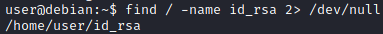

7. Files
Files and directories that have world-writable
permissionsFiles with world-writable permissions can be modified by any user on the system
◇
world writable directories:
find / \( -wholename '/home/homedir*' -prune \) -o \( -type d -perm -0002 \) -exec ls -ld '{}' ';' 2>/dev/null | grep -v root
◇
world writable directories for root:
find / \( -wholename '/home/homedir*' -prune \) -o \( -type d -perm -0002 \) -exec ls -ld '{}' ';' 2>/dev/null | grep root
◇
world writable files:
find / \( -wholename '/home/homedir/*' -prune -o -wholename '/proc/*' -prune \) -o \( -type f -perm -0002 \) -exec ls -l '{}' ';' 2>/dev/null
◇
world-writable files in /etc:
find /etc -perm -2 -type f 2>/dev/null
◇
searches for world-writable directories:
find / -writable -type d 2>/dev/null
Find files that are own by other users ◇ readable by our actual user but
own by another user
find / -perm /u=r -user [USER] 2>/dev/null
◇ writable by our actual user but own by another user
find / -perm /u=w -user [USER] 2>/dev/null
list open files(
https://en.wikipedia.org/wiki/Lsof)
Find files ◇ Find Files with “history” In Their Name (.bash_history,
etc.)
find /* -name *.*history* -print 2> /dev/null
◇ Find Files Owned By A Particular User
example: find / -user www-data
◇ Apache access.log file, grep
for “user” and “pass” strings
cat /var/log/apache/access.log |grep -E "^user|^pass"
◇ Dump cleartext Pre-Shared Wireless Keys from Network Manager
cat /etc/NetworkManager/system-connections/* |grep -E "^id|^psk"
◇ Find Files Owned By A Particular Group
example: find / -group sudo
◇ Find File Types Owned by a
Particular User
find / -user admin -name “*.sh”
◇ search for id_rsa file
find / -name id_rsa 2> /dev/null
